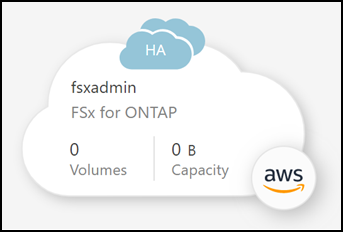

Solicitar cambios en el documento
Solicitar cambios en el documento Editar en GitHub
Editar en GitHub Guía del colaborador
Guía del colaboradorCree o descubra un entorno de trabajo de Amazon FSX para ONTAP
Colaboradores
Con BlueXP puede crear o descubrir un entorno de trabajo FSX para ONTAP para agregar y administrar volúmenes y servicios de datos adicionales.
Cree un entorno de trabajo de Amazon FSX para ONTAP
El primer paso es crear un entorno de trabajo FSX para ONTAP. Si ya ha creado un FSX para el sistema de archivos ONTAP en la consola de gestión de AWS, puede "Descúbralo mediante BlueXP".
Antes de crear su entorno de trabajo FSX para ONTAP en BlueXP, necesitará:
-
El ARN de una función IAM que proporciona a BlueXP los permisos necesarios para crear un entorno de trabajo FSX para ONTAP. Consulte "Adición de credenciales de AWS a BlueXP" para obtener más detalles.
-
La región y la información de VPN para la que creará la instancia de FSX para ONTAP.
-
En BlueXP, agregue un nuevo entorno de trabajo, seleccione la ubicación Amazon Web Services y haga clic en Siguiente.
-
Seleccione Amazon FSX para ONTAP y haga clic en Siguiente.
-
Autenticar FSX para ONTAP en BlueXP.
-
Si ya tiene una función IAM en su cuenta con los permisos de AWS correctos para FSX para ONTAP, selecciónela en el menú desplegable.

-
Si no tiene ningún rol de IAM en su cuenta, haga clic en Página de credenciales y siga los pasos del asistente para agregar un ARN para un rol de AWS IAM con credenciales de FSX para ONTAP. Consulte "Adición de credenciales de AWS a BlueXP" para obtener más detalles.

-
-
Proporcione información acerca de la instancia del FSX para ONTAP:
-
Introduzca el nombre del entorno de trabajo que desee utilizar.
-
De forma opcional, puede crear etiquetas haciendo clic en el signo más e introduciendo un nombre y un valor de etiqueta.
-
Introduzca y confirme la contraseña del clúster de ONTAP que desea utilizar.
-
Seleccione la opción para usar la misma contraseña para el usuario de SVM o establecer una contraseña diferente.
-
Haga clic en Siguiente.

-
-
Proporcionar información de región y VPC:
-
Seleccione un modelo de despliegue de alta disponibilidad Zona de disponibilidad única o zonas de disponibilidad múltiple.
-
Seleccione una región y VPC.

En el caso de varias zonas de disponibilidad, seleccione subredes en al menos dos zonas de disponibilidad, de manera que cada nodo esté en una zona de disponibilidad dedicada.
-
Acepte el grupo de seguridad predeterminado o seleccione uno diferente. "Grupos de seguridad de AWS" controlar el tráfico entrante y saliente. Los configura el administrador de AWS y están asociados con su "Interfaz de red elástica de AWS (ENI)".
-
Haga clic en Siguiente.
-
-
Deje CIDR Range vacío y haga clic en Siguiente para configurar automáticamente un rango disponible. Opcionalmente, puede utilizar "Puerta de enlace de tránsito de AWS" para configurar manualmente un rango.
-
Seleccione tablas de rutas que incluyan rutas a las direcciones IP flotantes. Si sólo tiene una tabla de rutas para las subredes en el VPC (la tabla de rutas principal), BlueXP agrega automáticamente las direcciones IP flotantes a esa tabla de rutas. Haga clic en Siguiente para continuar.

-
Acepte la clave maestra predeterminada de AWS o haga clic en Cambiar clave para seleccionar una clave maestra de cliente de AWS (CMK) diferente. Para obtener más información sobre CMK, consulte "Configuración de AWS KMS". Haga clic en Siguiente para continuar.

-
Configure su almacenamiento:
-
Seleccione el rendimiento, la capacidad y la unidad. Es posible cambiar el valor de capacidad de almacenamiento y rendimiento en cualquier momento.
-
Puede especificar un valor de IOPS de forma opcional. Si no especifica un valor de IOPS, BlueXP establecerá un valor predeterminado basado en 3 IOPS por GIB de la capacidad total introducida. Por ejemplo, si introduce 2000 GIB para la capacidad total y no hay valor para IOPS, el valor de IOPS efectivo se establecerá en 6000. Puede cambiar el valor de IOPS en cualquier momento.

Si especifica un valor de IOPS que no cumple los requisitos mínimos, recibirá un error al añadir el entorno de trabajo. 
-
Haga clic en Siguiente.
-
-
Revise la configuración:
-
Haga clic en las pestañas para revisar las propiedades de ONTAP, las propiedades del proveedor y la configuración de red.
-
Haga clic en anterior para realizar cambios en cualquier configuración.
-
Haga clic en Agregar para aceptar la configuración y crear su entorno de trabajo.

-
BlueXP muestra la configuración de su FSX para ONTAP en la página Canvas.

Ahora puede añadir volúmenes a su entorno de trabajo FSX para ONTAP con BlueXP.
Descubra un FSX existente para el sistema de archivos ONTAP
Si ha creado un sistema de archivos FSX para ONTAP mediante la Consola de administración de AWS o desea restaurar un entorno de trabajo que eliminó anteriormente, puede descubrirlo usando Mis oportunidades o manualmente.
Descubra el uso de Mis oportunidades
Si anteriormente ha proporcionado sus credenciales de AWS a BlueXP, Mis oportunidades puede descubrir y sugerir automáticamente FSX para sistemas de archivos ONTAP para agregar y gestionar con BlueXP. También puede revisar los servicios de datos disponibles.
-
En BlueXP, haga clic en la ficha Mis oportunidades.
-
Aparece el recuento de FSX detectados para sistemas de archivos ONTAP. Haga clic en Discover.
-
Seleccione uno o más sistemas de archivos y haga clic en descubrir para añadirlos al lienzo.
|
|
|
Detección manual
Puede descubrir manualmente un sistema de archivos FSX para ONTAP agregado con la consola de gestión de AWS o que anteriormente eliminó de BlueXP.
-
En BlueXP, haga clic en Agregar entorno de trabajo, seleccione Servicios Web de Amazon.
-
Seleccione Amazon FSX para ONTAP y haga clic en haga clic aquí.

-
Seleccione las credenciales existentes o cree nuevas credenciales. Haga clic en Siguiente.
-
Seleccione la región de AWS y el entorno de trabajo que desea agregar.
-
Haga clic en Agregar.
BlueXP muestra el sistema de archivos FSX para ONTAP descubierto.